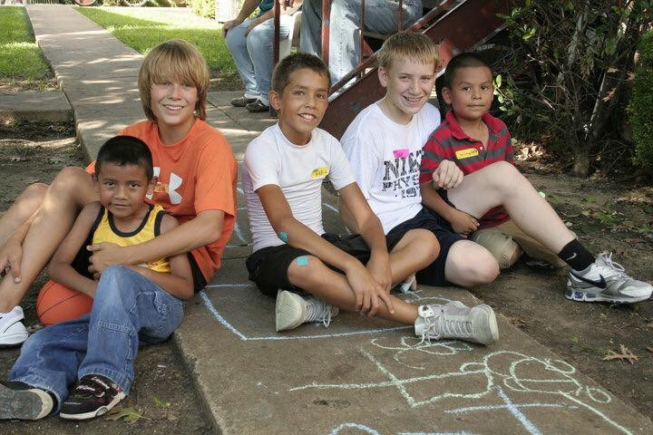
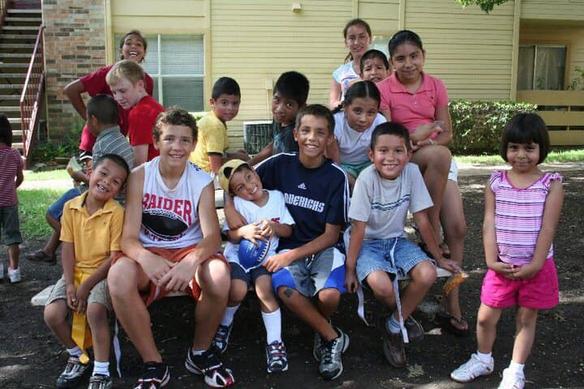

My Testimony
How I gave my life to Christ
Motivated by Success, Grappled by the Truth
I am very grateful to my parents for showing me
how to serve at a young age. We were taught to be
grateful for what we have, and to help those who need help.
As I have grown in my love
for Christ, my heart to serve others has grown.


Every little brother looks up to his older siblings.
My older sister and brother showed me by example how putting others before yourself
is something to strive for. By their actions,
I saw how living selfless actually
gets the most out of your own life.